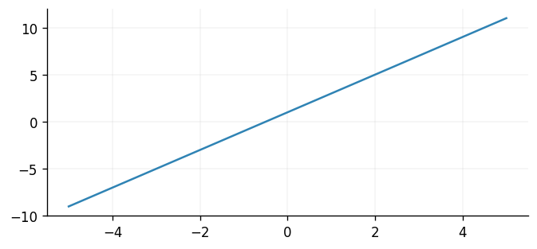
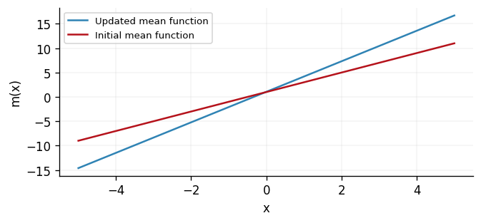

Backend Module Design
Since v0.9, GPJax is built upon Flax's NNX module. This transition allows for more efficient parameter handling, improved integration with Flax and Flax-based libraries, and enhanced flexibility in model design. This notebook provides a high-level overview of the backend module design in GPJax. For an introduction to NNX, please refer to the official documentation.
import typing as tp
from flax import nnx
# Enable Float64 for more stable matrix inversions.
from jax import (
config,
grad,
)
import jax.numpy as jnp
import jax.tree_util as jtu
from jaxtyping import (
Float,
Num,
install_import_hook,
)
import matplotlib as mpl
import matplotlib.pyplot as plt
from examples.utils import use_mpl_style
from gpjax.mean_functions import (
AbstractMeanFunction,
Constant,
)
from gpjax.parameters import (
DEFAULT_BIJECTION,
Parameter,
PositiveReal,
Real,
transform,
)
from gpjax.typing import (
Array,
ScalarFloat,
)
config.update("jax_enable_x64", True)
with install_import_hook("gpjax", "beartype.beartype"):
import gpjax as gpx
# set the default style for plotting
use_mpl_style()
cols = mpl.rcParams["axes.prop_cycle"].by_key()["color"]
Parameters
The biggest change bought about by the transition to an NNX backend is the increased
support we now provide for handling parameters. As discussed in our Sharp Bits -
Bijectors Doc, GPJax
uses bijectors to transform constrained parameters to unconstrained parameters during
optimisation. You may now register the support of a parameter using our Parameter
class. To see this, consider the constant mean function who contains a single constant
parameter whose value ordinarily exists on the real line. We can register this
parameter as follows:
[38;2;79;201;177mConstant[0m[38;2;255;213;3m([0m[38;2;105;105;105m # Parameter: 1 (8 B)[0m
[38;2;156;220;254mconstant[0m[38;2;212;212;212m=[0m[38;2;79;201;177mParameter[0m[38;2;255;213;3m([0m[38;2;105;105;105m # 1 (8 B)[0m
[38;2;156;220;254mvalue[0m[38;2;212;212;212m=[0mArray(1., dtype=float64, weak_type=True),
[38;2;156;220;254mtag[0m[38;2;212;212;212m=[0m[38;2;86;156;214mNone[0m
[38;2;255;213;3m)[0m
[38;2;255;213;3m)[0m
However, suppose you wish your mean function's constant parameter to be strictly
positive. This is easy to achieve by using the correct Parameter type which, in this
case, will be the PositiveReal. However, any Parameter that subclasses from
Parameter will be transformed by GPJax.
True
Injecting this newly constrained parameter into our mean function is then identical to before.
[38;2;79;201;177mConstant[0m[38;2;255;213;3m([0m[38;2;105;105;105m # PositiveReal: 1 (8 B)[0m
[38;2;156;220;254mconstant[0m[38;2;212;212;212m=[0m[38;2;79;201;177mPositiveReal[0m[38;2;255;213;3m([0m[38;2;105;105;105m # 1 (8 B)[0m
[38;2;156;220;254mvalue[0m[38;2;212;212;212m=[0mArray(1., dtype=float64, weak_type=True),
[38;2;156;220;254mtag[0m[38;2;212;212;212m=[0m[38;2;207;144;120m'positive'[0m
[38;2;255;213;3m)[0m
[38;2;255;213;3m)[0m
Were we to try and instantiate the PositiveReal class with a negative value, then an
explicit error would be raised.
value needs to be positive, got -1.0 (`check` failed)
Parameter Transforms
With a parameter instantiated, you likely wish to transform the parameter's value from
its constrained support onto the entire real line. To do this, you can apply the
transform function to the parameter. To control the bijector used to transform the
parameter, you may pass a set of bijectors into the transform function.
Under-the-hood, the transform function is looking up the bijector of a parameter
using it's _tag field in the bijector dictionary, and then applying the bijector to
the parameter's value using a tree map operation.
positive
For most users, you will not need to worry about this as we provide a set of default bijectors that are defined for all the parameter types we support. However, see our Kernel Guide Notebook to see how you can define your own bijectors and parameter types.
<numpyro.distributions.transforms.SoftplusTransform object at 0x7f9d25032b50>
We see here that the Softplus bijector is specified as the default for strictly
positive parameters. To apply this, we must first realise the state of our model.
This is achieved using the split function provided by nnx.
_, _params = nnx.split(meanf, Parameter)
tranformed_params = transform(_params, DEFAULT_BIJECTION, inverse=True)
The parameter's value was changed here from 1. to 0.54132485. This is the result of applying the Softplus bijector to the parameter's value and projecting its value onto the real line. Were the parameter's value to be closer to 0, then the transformation would be more pronounced.
_, _close_to_zero_state = nnx.split(Constant(PositiveReal(value=1e-6)), Parameter)
transform(_close_to_zero_state, DEFAULT_BIJECTION, inverse=True)
State({
'constant': PositiveReal( # 1 (8 B)
value=Array(-13.81551006, dtype=float64, weak_type=True),
tag='positive'
)
})
Transforming Multiple Parameters
In the above, we transformed a single parameter. However, in practice your parameters may be nested within several functions e.g., a kernel function within a GP model. Fortunately, transforming several parameters is a simple operation that we here demonstrate for a conjugate GP posterior (see our Regression Notebook for detailed explanation of this model.).
kernel = gpx.kernels.Matern32()
meanf = gpx.mean_functions.Constant()
prior = gpx.gps.Prior(mean_function=meanf, kernel=kernel)
likelihood = gpx.likelihoods.Gaussian(100)
posterior = likelihood * prior
print(posterior)
[38;2;79;201;177mConjugatePosterior[0m[38;2;255;213;3m([0m[38;2;105;105;105m # NonNegativeReal: 2 (16 B), PositiveReal: 1 (8 B), Total: 3 (24 B)[0m
[38;2;156;220;254mprior[0m[38;2;212;212;212m=[0m[38;2;79;201;177mPrior[0m[38;2;255;213;3m([0m[38;2;105;105;105m # PositiveReal: 1 (8 B), NonNegativeReal: 1 (8 B), Total: 2 (16 B)[0m
[38;2;156;220;254mkernel[0m[38;2;212;212;212m=[0m[38;2;79;201;177mMatern32[0m[38;2;255;213;3m([0m[38;2;105;105;105m # PositiveReal: 1 (8 B), NonNegativeReal: 1 (8 B), Total: 2 (16 B)[0m
[38;2;156;220;254mactive_dims[0m[38;2;212;212;212m=[0mslice(None, None, None),
[38;2;156;220;254mn_dims[0m[38;2;212;212;212m=[0m[38;2;86;156;214mNone[0m,
[38;2;156;220;254mcompute_engine[0m[38;2;212;212;212m=[0m<gpjax.kernels.computations.dense.DenseKernelComputation object at 0x7f9d24f48fd0>,
[38;2;156;220;254mlengthscale[0m[38;2;212;212;212m=[0m[38;2;79;201;177mPositiveReal[0m[38;2;255;213;3m([0m[38;2;105;105;105m # 1 (8 B)[0m
[38;2;156;220;254mvalue[0m[38;2;212;212;212m=[0mArray(1., dtype=float64, weak_type=True),
[38;2;156;220;254mtag[0m[38;2;212;212;212m=[0m[38;2;207;144;120m'positive'[0m
[38;2;255;213;3m)[0m,
[38;2;156;220;254mvariance[0m[38;2;212;212;212m=[0m[38;2;79;201;177mNonNegativeReal[0m[38;2;255;213;3m([0m[38;2;105;105;105m # 1 (8 B)[0m
[38;2;156;220;254mvalue[0m[38;2;212;212;212m=[0mArray(1., dtype=float64, weak_type=True),
[38;2;156;220;254mtag[0m[38;2;212;212;212m=[0m[38;2;207;144;120m'non_negative'[0m
[38;2;255;213;3m)[0m
[38;2;255;213;3m)[0m,
[38;2;156;220;254mmean_function[0m[38;2;212;212;212m=[0m[38;2;79;201;177mConstant[0m[38;2;255;213;3m([0m[38;2;105;105;105m[0m
[38;2;156;220;254mconstant[0m[38;2;212;212;212m=[0mArray(0., dtype=float64, weak_type=True)
[38;2;255;213;3m)[0m,
[38;2;156;220;254mjitter[0m[38;2;212;212;212m=[0m[38;2;182;207;169m1e-06[0m
[38;2;255;213;3m)[0m,
[38;2;156;220;254mlikelihood[0m[38;2;212;212;212m=[0m[38;2;79;201;177mGaussian[0m[38;2;255;213;3m([0m[38;2;105;105;105m # NonNegativeReal: 1 (8 B)[0m
[38;2;156;220;254mobs_stddev[0m[38;2;212;212;212m=[0m[38;2;79;201;177mNonNegativeReal[0m[38;2;255;213;3m([0m[38;2;105;105;105m # 1 (8 B)[0m
[38;2;156;220;254mvalue[0m[38;2;212;212;212m=[0mArray(1., dtype=float64, weak_type=True),
[38;2;156;220;254mtag[0m[38;2;212;212;212m=[0m[38;2;207;144;120m'non_negative'[0m
[38;2;255;213;3m)[0m,
[38;2;156;220;254mnum_datapoints[0m[38;2;212;212;212m=[0m[38;2;182;207;169m100[0m,
[38;2;156;220;254mintegrator[0m[38;2;212;212;212m=[0m<gpjax.integrators.AnalyticalGaussianIntegrator object at 0x7f9d201937d0>
[38;2;255;213;3m)[0m,
[38;2;156;220;254mjitter[0m[38;2;212;212;212m=[0m[38;2;182;207;169m1e-06[0m
[38;2;255;213;3m)[0m
Now contained within the posterior PyGraph here there are four parameters: the
kernel's lengthscale and variance, the noise variance of the likelihood, and the
constant of the mean function. Using NNX, we may realise these parameters through the
nnx.split function. The split function deomposes a PyGraph into a GraphDef and
State object. As the name suggests, State contains information on the parameters'
state, whilst GraphDef contains the information required to reconstruct a PyGraph
from a give State.
[38;2;79;201;177mState[0m[38;2;255;213;3m({[0m[38;2;105;105;105m[0m
[38;2;156;220;254m'likelihood'[0m[38;2;212;212;212m: [0m[38;2;255;213;3m{[0m[38;2;105;105;105m[0m
[38;2;156;220;254m'obs_stddev'[0m[38;2;212;212;212m: [0m[38;2;79;201;177mNonNegativeReal[0m[38;2;255;213;3m([0m[38;2;105;105;105m # 1 (8 B)[0m
[38;2;156;220;254mvalue[0m[38;2;212;212;212m=[0mArray(1., dtype=float64, weak_type=True),
[38;2;156;220;254mtag[0m[38;2;212;212;212m=[0m[38;2;207;144;120m'non_negative'[0m
[38;2;255;213;3m)[0m
[38;2;255;213;3m}[0m,
[38;2;156;220;254m'prior'[0m[38;2;212;212;212m: [0m[38;2;255;213;3m{[0m[38;2;105;105;105m[0m
[38;2;156;220;254m'kernel'[0m[38;2;212;212;212m: [0m[38;2;255;213;3m{[0m[38;2;105;105;105m[0m
[38;2;156;220;254m'lengthscale'[0m[38;2;212;212;212m: [0m[38;2;79;201;177mPositiveReal[0m[38;2;255;213;3m([0m[38;2;105;105;105m # 1 (8 B)[0m
[38;2;156;220;254mvalue[0m[38;2;212;212;212m=[0mArray(1., dtype=float64, weak_type=True),
[38;2;156;220;254mtag[0m[38;2;212;212;212m=[0m[38;2;207;144;120m'positive'[0m
[38;2;255;213;3m)[0m,
[38;2;156;220;254m'variance'[0m[38;2;212;212;212m: [0m[38;2;79;201;177mNonNegativeReal[0m[38;2;255;213;3m([0m[38;2;105;105;105m # 1 (8 B)[0m
[38;2;156;220;254mvalue[0m[38;2;212;212;212m=[0mArray(1., dtype=float64, weak_type=True),
[38;2;156;220;254mtag[0m[38;2;212;212;212m=[0m[38;2;207;144;120m'non_negative'[0m
[38;2;255;213;3m)[0m
[38;2;255;213;3m}[0m,
[38;2;156;220;254m'mean_function'[0m[38;2;212;212;212m: [0m[38;2;255;213;3m{[0m[38;2;105;105;105m[0m
[38;2;156;220;254m'constant'[0m[38;2;212;212;212m: [0mArray(0., dtype=float64, weak_type=True)
[38;2;255;213;3m}[0m
[38;2;255;213;3m}[0m
[38;2;255;213;3m})[0m
The State object behaves just like a PyTree and, consequently, we may use JAX's
tree_map function to alter the values of the State. The updated State can then
be used to reconstruct our posterior. In the below, we simply increment each
parameter's value by 1.
[38;2;79;201;177mState[0m[38;2;255;213;3m({[0m[38;2;105;105;105m[0m
[38;2;156;220;254m'likelihood'[0m[38;2;212;212;212m: [0m[38;2;255;213;3m{[0m[38;2;105;105;105m[0m
[38;2;156;220;254m'obs_stddev'[0m[38;2;212;212;212m: [0m[38;2;79;201;177mNonNegativeReal[0m[38;2;255;213;3m([0m[38;2;105;105;105m # 1 (8 B)[0m
[38;2;156;220;254mvalue[0m[38;2;212;212;212m=[0mArray(2., dtype=float64, weak_type=True),
[38;2;156;220;254mtag[0m[38;2;212;212;212m=[0m[38;2;207;144;120m'non_negative'[0m
[38;2;255;213;3m)[0m
[38;2;255;213;3m}[0m,
[38;2;156;220;254m'prior'[0m[38;2;212;212;212m: [0m[38;2;255;213;3m{[0m[38;2;105;105;105m[0m
[38;2;156;220;254m'kernel'[0m[38;2;212;212;212m: [0m[38;2;255;213;3m{[0m[38;2;105;105;105m[0m
[38;2;156;220;254m'lengthscale'[0m[38;2;212;212;212m: [0m[38;2;79;201;177mPositiveReal[0m[38;2;255;213;3m([0m[38;2;105;105;105m # 1 (8 B)[0m
[38;2;156;220;254mvalue[0m[38;2;212;212;212m=[0mArray(2., dtype=float64, weak_type=True),
[38;2;156;220;254mtag[0m[38;2;212;212;212m=[0m[38;2;207;144;120m'positive'[0m
[38;2;255;213;3m)[0m,
[38;2;156;220;254m'variance'[0m[38;2;212;212;212m: [0m[38;2;79;201;177mNonNegativeReal[0m[38;2;255;213;3m([0m[38;2;105;105;105m # 1 (8 B)[0m
[38;2;156;220;254mvalue[0m[38;2;212;212;212m=[0mArray(2., dtype=float64, weak_type=True),
[38;2;156;220;254mtag[0m[38;2;212;212;212m=[0m[38;2;207;144;120m'non_negative'[0m
[38;2;255;213;3m)[0m
[38;2;255;213;3m}[0m,
[38;2;156;220;254m'mean_function'[0m[38;2;212;212;212m: [0m[38;2;255;213;3m{[0m[38;2;105;105;105m[0m
[38;2;156;220;254m'constant'[0m[38;2;212;212;212m: [0mArray(1., dtype=float64, weak_type=True)
[38;2;255;213;3m}[0m
[38;2;255;213;3m}[0m
[38;2;255;213;3m})[0m
Let us now use NNX's merge function to reconstruct the posterior distribution using
the updated state.
[38;2;79;201;177mConjugatePosterior[0m[38;2;255;213;3m([0m[38;2;105;105;105m # NonNegativeReal: 2 (16 B), PositiveReal: 1 (8 B), Total: 3 (24 B)[0m
[38;2;156;220;254mjitter[0m[38;2;212;212;212m=[0m[38;2;182;207;169m1e-06[0m,
[38;2;156;220;254mlikelihood[0m[38;2;212;212;212m=[0m[38;2;79;201;177mGaussian[0m[38;2;255;213;3m([0m[38;2;105;105;105m # NonNegativeReal: 1 (8 B)[0m
[38;2;156;220;254mintegrator[0m[38;2;212;212;212m=[0m<gpjax.integrators.AnalyticalGaussianIntegrator object at 0x7f9d201937d0>,
[38;2;156;220;254mnum_datapoints[0m[38;2;212;212;212m=[0m[38;2;182;207;169m100[0m,
[38;2;156;220;254mobs_stddev[0m[38;2;212;212;212m=[0m[38;2;79;201;177mNonNegativeReal[0m[38;2;255;213;3m([0m[38;2;105;105;105m # 1 (8 B)[0m
[38;2;156;220;254mvalue[0m[38;2;212;212;212m=[0mArray(2., dtype=float64, weak_type=True),
[38;2;156;220;254mtag[0m[38;2;212;212;212m=[0m[38;2;207;144;120m'non_negative'[0m
[38;2;255;213;3m)[0m
[38;2;255;213;3m)[0m,
[38;2;156;220;254mprior[0m[38;2;212;212;212m=[0m[38;2;79;201;177mPrior[0m[38;2;255;213;3m([0m[38;2;105;105;105m # PositiveReal: 1 (8 B), NonNegativeReal: 1 (8 B), Total: 2 (16 B)[0m
[38;2;156;220;254mjitter[0m[38;2;212;212;212m=[0m[38;2;182;207;169m1e-06[0m,
[38;2;156;220;254mkernel[0m[38;2;212;212;212m=[0m[38;2;79;201;177mMatern32[0m[38;2;255;213;3m([0m[38;2;105;105;105m # PositiveReal: 1 (8 B), NonNegativeReal: 1 (8 B), Total: 2 (16 B)[0m
[38;2;156;220;254mactive_dims[0m[38;2;212;212;212m=[0mslice(None, None, None),
[38;2;156;220;254mcompute_engine[0m[38;2;212;212;212m=[0m<gpjax.kernels.computations.dense.DenseKernelComputation object at 0x7f9d24f48fd0>,
[38;2;156;220;254mlengthscale[0m[38;2;212;212;212m=[0m[38;2;79;201;177mPositiveReal[0m[38;2;255;213;3m([0m[38;2;105;105;105m # 1 (8 B)[0m
[38;2;156;220;254mvalue[0m[38;2;212;212;212m=[0mArray(2., dtype=float64, weak_type=True),
[38;2;156;220;254mtag[0m[38;2;212;212;212m=[0m[38;2;207;144;120m'positive'[0m
[38;2;255;213;3m)[0m,
[38;2;156;220;254mn_dims[0m[38;2;212;212;212m=[0m[38;2;86;156;214mNone[0m,
[38;2;156;220;254mvariance[0m[38;2;212;212;212m=[0m[38;2;79;201;177mNonNegativeReal[0m[38;2;255;213;3m([0m[38;2;105;105;105m # 1 (8 B)[0m
[38;2;156;220;254mvalue[0m[38;2;212;212;212m=[0mArray(2., dtype=float64, weak_type=True),
[38;2;156;220;254mtag[0m[38;2;212;212;212m=[0m[38;2;207;144;120m'non_negative'[0m
[38;2;255;213;3m)[0m
[38;2;255;213;3m)[0m,
[38;2;156;220;254mmean_function[0m[38;2;212;212;212m=[0m[38;2;79;201;177mConstant[0m[38;2;255;213;3m([0m[38;2;105;105;105m[0m
[38;2;156;220;254mconstant[0m[38;2;212;212;212m=[0mArray(1., dtype=float64, weak_type=True)
[38;2;255;213;3m)[0m
[38;2;255;213;3m)[0m
[38;2;255;213;3m)[0m
However, we begun this point of conversation with bijectors in mind, so let us now see
how bijectors may be applied to a collection of parameters in GPJax. Fortunately, this
is very straightforward, and we may simply use the transform function as before.
[38;2;79;201;177mState[0m[38;2;255;213;3m({[0m[38;2;105;105;105m[0m
[38;2;156;220;254m'likelihood'[0m[38;2;212;212;212m: [0m[38;2;255;213;3m{[0m[38;2;105;105;105m[0m
[38;2;156;220;254m'obs_stddev'[0m[38;2;212;212;212m: [0m[38;2;79;201;177mNonNegativeReal[0m[38;2;255;213;3m([0m[38;2;105;105;105m # 1 (8 B)[0m
[38;2;156;220;254mvalue[0m[38;2;212;212;212m=[0mArray(0.54132485, dtype=float64, weak_type=True),
[38;2;156;220;254mtag[0m[38;2;212;212;212m=[0m[38;2;207;144;120m'non_negative'[0m
[38;2;255;213;3m)[0m
[38;2;255;213;3m}[0m,
[38;2;156;220;254m'prior'[0m[38;2;212;212;212m: [0m[38;2;255;213;3m{[0m[38;2;105;105;105m[0m
[38;2;156;220;254m'kernel'[0m[38;2;212;212;212m: [0m[38;2;255;213;3m{[0m[38;2;105;105;105m[0m
[38;2;156;220;254m'lengthscale'[0m[38;2;212;212;212m: [0m[38;2;79;201;177mPositiveReal[0m[38;2;255;213;3m([0m[38;2;105;105;105m # 1 (8 B)[0m
[38;2;156;220;254mvalue[0m[38;2;212;212;212m=[0mArray(0.54132485, dtype=float64, weak_type=True),
[38;2;156;220;254mtag[0m[38;2;212;212;212m=[0m[38;2;207;144;120m'positive'[0m
[38;2;255;213;3m)[0m,
[38;2;156;220;254m'variance'[0m[38;2;212;212;212m: [0m[38;2;79;201;177mNonNegativeReal[0m[38;2;255;213;3m([0m[38;2;105;105;105m # 1 (8 B)[0m
[38;2;156;220;254mvalue[0m[38;2;212;212;212m=[0mArray(0.54132485, dtype=float64, weak_type=True),
[38;2;156;220;254mtag[0m[38;2;212;212;212m=[0m[38;2;207;144;120m'non_negative'[0m
[38;2;255;213;3m)[0m
[38;2;255;213;3m}[0m,
[38;2;156;220;254m'mean_function'[0m[38;2;212;212;212m: [0m[38;2;255;213;3m{[0m[38;2;105;105;105m[0m
[38;2;156;220;254m'constant'[0m[38;2;212;212;212m: [0mArray(0., dtype=float64, weak_type=True)
[38;2;255;213;3m}[0m
[38;2;255;213;3m}[0m
[38;2;255;213;3m})[0m
We may also (re-)constrain the parameters' values by setting the inverse argument of
transform to False.
Fine-Scale Control
One of the advantages of being able to split and re-merge the PyGraph is that we are
able to gain fine-scale control over the parameters' whose state we wish to realise.
This is by virtue of the fact that each of our parameters now inherit from
gpjax.parameters.Parameter. In the former, we were simply extracting any
Parametersubclass from the posterior. However, suppose we only wish to extract those
parameters whose support is the positive real line. This is easily achieved by
altering the way in which we invoke nnx.split.
graphdef, positive_reals, other_params = nnx.split(posterior, PositiveReal, ...)
print(positive_reals)
[38;2;79;201;177mState[0m[38;2;255;213;3m({[0m[38;2;105;105;105m[0m
[38;2;156;220;254m'prior'[0m[38;2;212;212;212m: [0m[38;2;255;213;3m{[0m[38;2;105;105;105m[0m
[38;2;156;220;254m'kernel'[0m[38;2;212;212;212m: [0m[38;2;255;213;3m{[0m[38;2;105;105;105m[0m
[38;2;156;220;254m'lengthscale'[0m[38;2;212;212;212m: [0m[38;2;79;201;177mPositiveReal[0m[38;2;255;213;3m([0m[38;2;105;105;105m # 1 (8 B)[0m
[38;2;156;220;254mvalue[0m[38;2;212;212;212m=[0mArray(1., dtype=float64, weak_type=True),
[38;2;156;220;254mtag[0m[38;2;212;212;212m=[0m[38;2;207;144;120m'positive'[0m
[38;2;255;213;3m)[0m
[38;2;255;213;3m}[0m
[38;2;255;213;3m}[0m
[38;2;255;213;3m})[0m
Now we see that we have two state objects: one containing the positive real parameters and the other containing the remaining parameters. This functionality is exceptionally useful as it allows us to efficiently operate on a subset of the parameters whilst leaving the others untouched. Looking forward, we hope to use this functionality in our Variational Inference Approximations to perform more efficient updates of the variational parameters and then the model's hyperparameters.
NNX Modules
To conclude this notebook, we will now demonstrate the ease of use and flexibility offered by NNX modules. To do this, we will implement a linear mean function using the existing abstractions in GPJax.
For inputs \(x_n \in \mathbb{R}^d\), the linear mean function \(m(x): \mathbb{R}^d \to \mathbb{R}\) is defined as: $$ m(x) = \alpha + \sum_{i=1}^d \beta_i x_i $$ where \(\alpha \in \mathbb{R}\) and \(\beta_i \in \mathbb{R}\) are the parameters of the mean function. Let's now implement that using the new NNX backend.
class LinearMeanFunction(AbstractMeanFunction):
def __init__(
self,
intercept: tp.Union[ScalarFloat, Float[Array, " O"], Parameter] = 0.0,
slope: tp.Union[ScalarFloat, Float[Array, " D O"], Parameter] = 0.0,
):
if isinstance(intercept, Parameter):
self.intercept = intercept
else:
self.intercept = Real(jnp.array(intercept))
if isinstance(slope, Parameter):
self.slope = slope
else:
self.slope = Real(jnp.array(slope))
def __call__(self, x: Num[Array, "N D"]) -> Float[Array, "N O"]:
return self.intercept.value + jnp.dot(x, self.slope.value)
As we can see, the implementation is straightforward and concise. The
AbstractMeanFunction module is a subclass of nnx.Module and may, therefore, be
used in any split or merge call. Further, we have registered the intercept and
slope parameters as Real parameter types. This registers their value in the PyGraph
and means that they will be part of any operation applied to the PyGraph e.g.,
transforming and differentiation.
To check our implementation worked, let's now plot the value of our mean function for a linearly spaced set of inputs.
N = 100
X = jnp.linspace(-5.0, 5.0, N)[:, None]
meanf = LinearMeanFunction(intercept=1.0, slope=2.0)
plt.plot(X, meanf(X))
[<matplotlib.lines.Line2D at 0x7f9cd0206c10>]

Looks good! To conclude this section, let's now parameterise a GP with our new mean function and see how gradients may be computed.
y = jnp.sin(X)
D = gpx.Dataset(X, y)
prior = gpx.gps.Prior(mean_function=meanf, kernel=gpx.kernels.Matern32())
likelihood = gpx.likelihoods.Gaussian(D.n)
posterior = likelihood * prior
We'll compute derivatives of the conjugate marginal log-likelihood, with respect to the unconstrained state of the kernel, mean function, and likelihood parameters.
graphdef, params, others = nnx.split(posterior, Parameter, ...)
params = transform(params, DEFAULT_BIJECTION, inverse=True)
def loss_fn(params: nnx.State, data: gpx.Dataset) -> ScalarFloat:
params = transform(params, DEFAULT_BIJECTION)
model = nnx.merge(graphdef, params, *others)
return -gpx.objectives.conjugate_mll(model, data)
param_grads = grad(loss_fn)(params, D)
In practice, you would wish to perform multiple iterations of gradient descent to
learn the optimal parameter values. However, for the purposes of illustration, we use
another tree_map in the below to update the parameters' state using their previously
computed gradients. As you can see, the really beauty in having access to the model's
state is that we have full control over the operations that we perform to the state.
LEARNING_RATE = 0.01
optimised_params = jtu.tree_map(
lambda _params, _grads: _params + LEARNING_RATE * _grads, params, param_grads
)
Now we will plot the updated mean function alongside its initial form. To achieve
this, we first merge the state back into the model using merge, and we then simply
invoke the model as normal.
optimised_posterior = nnx.merge(graphdef, optimised_params, *others)
fig, ax = plt.subplots()
ax.plot(X, optimised_posterior.prior.mean_function(X), label="Updated mean function")
ax.plot(X, meanf(X), label="Initial mean function")
ax.legend()
ax.set(xlabel="x", ylabel="m(x)")
[Text(0.5, 0, 'x'), Text(0, 0.5, 'm(x)')]

Conclusions
In this notebook we have explored how GPJax's Flax-based backend may be easily manipulated and extended. For a more applied look at this, see how we construct a kernel on polar coordinates in our Kernel Guide notebook.
System configuration
Author: Thomas Pinder
Last updated: Tue Sep 09 2025
Python implementation: CPython
Python version : 3.11.13
IPython version : 9.5.0
matplotlib: 3.10.6
jaxtyping : 0.3.2
gpjax : 0.12.2
jax : 0.7.1
flax : 0.11.2
Watermark: 2.5.0